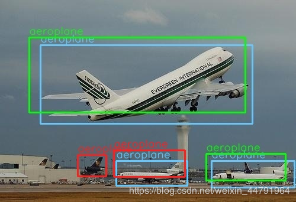
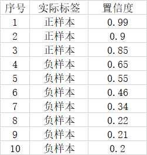
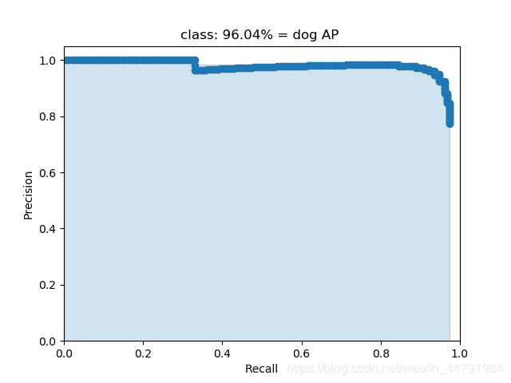

CSDN: https://blog.csdn.net/weixin_44791964/article/details/104695264
知识储备
1、IOU的概念
IOU的概念应该比较简单，就是衡量预测框和真实框的重合程度。
下图是一个示例：图中绿色框为实际框（好像不是很绿……），红色框为预测框，当我们需要判断两个框之间的关系时，主要就是判断两个框的重合程度
计算IOU的公式为：
$$IOU=\frac{S_交}{S_并}$$
2、TP TN FP FN的概念
TP TN FP FN里面一共出现了4个字母，分别是T F P N。
T是True；
F是False；
P是Positive；
N是Negative。
T或者F代表的是该样本 是否被正确分类。
P或者N代表的是该样本 原本是正样本还是负样本。
TP（True Positives）意思就是被分为了正样本，而且分对了。
TN（True Negatives）意思就是被分为了负样本，而且分对了，
FP（False Positives）意思就是被分为了正样本，但是分错了（事实上这个样本是负样本）。
FN（False Negatives）意思就是被分为了负样本，但是分错了（事实上这个样本是这样本）。
在mAP计算的过程中主要用到了，TP、FP、FN这三个概念。
3、precision（精确度）和recall（召回率）
精确度：模型预测为真的样本中，实际为真的比例
$$Precision=\frac{TP}{TP+FP}$$
召回率：模型预测为真且实际为真的样本占实际为真的样本的比例
$$Recall=\frac{TP}{TP+FN}$$
4、概念举例

如图所示，蓝色的框是 真实框。绿色和红色的框是 预测框，绿色的框是正样本，红色的框是负样本。一般来讲，当预测框和真实框IOU>=0.5时，被认为是正样本。
因此对于这幅图来讲。
真实框一共有3个，正样本一共有2个，负样本一共有2个。
此时
$$Precision= \frac{2}{2+2}=\frac{1}{2}$$
$$Recall=\frac{2}{2+1} = \frac{2}{3}$$
单个指标的局限性
在目标检测算法里面有一个非常重要的概念是置信度，如果置信度设置的高的话，预测的结果和实际情况就很符合，如果置信度低的话，就会有很多误检测。
假设一幅图里面总共有3个正样本，目标检测对这幅图的预测结果有10个，其中3个实际上是正样本，7个实际上是负样本。对应置信度如下。

如果我们将可以接受的置信度设置为0.95的话，那么目标检测算法就会将序号为1的样本作为正样本，其它的都是负样本。此时TP = 1，FP = 0，FN = 2。
$$Precision=\frac{1}{1+0}=1$$
$$Recall= \frac{1}{1+2} = \frac{1}{3}$$
此时Precision非常高，但是事实上我们只检测出一个正样本，还有两个没有检测出来，因此只用Precision就不合适。
这个时候如果我们将可以接受的置信度设置为0.35的话，那么目标检测算法就会将序号为1的样本作为正样本，其它的都是负样本。此时TP = 3，FP = 3，FN = 0。
$$Precision=\frac{3}{3+3}=\frac{1}{2}$$
$$Recall= \frac{3}{3+0} = \frac{1}{2}$$
此时Recall非常高，但是事实上目标检测算法认为是正样本的样本里面，有3个样本确实是正样本，但有三个是负样本，存在非常严重的误检测，因此只用Recall就不合适。
二者进行结合才是评价的正确方法。
什么是AP
AP事实上指的是，利用不同的Precision和Recall的点的组合，画出来的曲线下面的面积。
如下面这幅图所示。

当我们取不同的置信度，可以获得不同的Precision和不同的Recall，当我们取得置信度够密集的时候，就可以获得非常多的Precision和Recall。
此时Precision和Recall可以在图片上画出一条线，这条线下部分的面积就是某个类的AP值。
mAP就是所有的类的AP值求平均。
github: https://github.com/Cartucho/mAP